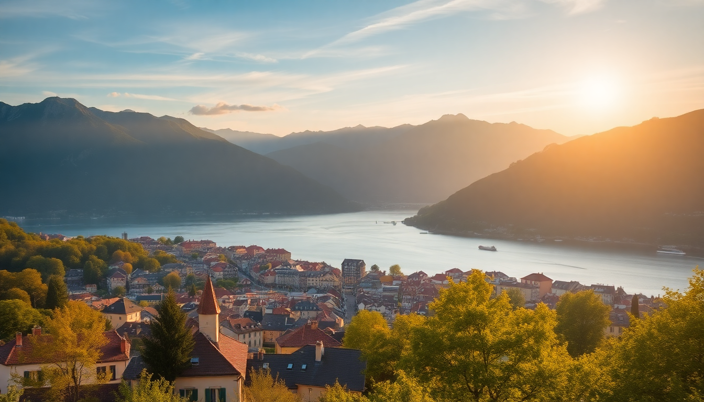

Best Day Trips from Lyon: Annecy, Chamonix & Beaujolais

We spent a week based in Lyon’s Presqu’île, and every morning we hopped a train or rented a car to see what lay beyond the city. Three trips stood out: the alpine lake town of Annecy, the Mont Blanc gateway of Chamonix, and the rolling vineyards of Beaujolais. Each felt like a different country, and each was doable in a single day without rushing. Here’s how we did it, where we ate, and what I’d skip next time.
How do you get to Annecy from Lyon?
The train is the easiest bet. We caught the TER from Lyon Part-Dieu to Annecy station—about two hours direct, no changes. Tickets ran around €25 each way if booked a few days ahead on SNCF Connect. Driving is faster if you hit no traffic (about 1.5 hours via the A43), but parking in Annecy old town is a headache. We parked at the Parc Relais des Glaisins on the outskirts and took the free shuttle in.
Once you arrive, the lake is a five-minute walk from the station. Head straight for the Vieille Ville (old town) and follow the canals. The Palais de l’Isle, the little stone prison on its own island, is worth a photo but not the €5 entry—you’ll see it best from the footbridge. For lunch, we grabbed a table at Le Freti on Rue Sainte-Claire. Their tartiflette was salty, cheesy, and exactly what you want after a morning walk.
- Train from Lyon Part-Dieu to Annecy station (2 hours, direct)
- Parc Relais des Glaisins for cheap parking if driving
- Le Freti for tartiflette and local wine
- Palais de l’Isle (view from outside, skip the interior)
Is a day trip to Chamonix from Lyon too ambitious?
It’s tight but doable if you leave by 6:30 AM. We took the first OUIGO train from Lyon Part-Dieu to Saint-Gervais-les-Bains, then switched to the Mont Blanc Express for the final leg into Chamonix. Total time: about 3.5 hours each way. If that sounds like too much, the AlpyBus runs direct coaches from Lyon Perrache to Chamonix in roughly 3 hours—less scenic but no transfers.
We arrived in Chamonix by 10:30 AM and walked straight to the Aiguille du Midi cable car. The queue was already 45 minutes, so I’d book tickets online in advance. At 3,842 meters, the view of Mont Blanc is stunning, but the altitude hit me harder than expected—bring water and a jacket even in summer. After descending, we grabbed a late lunch at La Calèche on Rue du Dr Paccard. Their fondue is rich, the service is brisk, and the price (€22 per person) is fair for the valley.
- OUIGO train to Saint-Gervais + Mont Blanc Express to Chamonix
- AlpyBus direct coach from Lyon Perrache (less scenic, no transfers)
- Aiguille du Midi cable car (book online to skip the queue)
- La Calèche for fondue or raclette
What’s the best way to tour the Beaujolais wine region from Lyon?
Renting a car gave us the most freedom. We picked one up from Hertz at Lyon Part-Dieu and drove 40 minutes north to the village of Oingt, one of the Plus Beaux Villages de France. The road winds through vineyards and stone hamlets—no need for a GPS, just follow the signs for the Route des Vins.
We stopped at Domaine de la Madone in Fleurie for a tasting. The owner poured us a 2020 Fleurie and a Brouilly without any pressure to buy. We bought a bottle anyway (€12). Lunch was at Le P’tit Bouchon in the village of Beaujeu, where the menu du jour (€18) included a local sausage with potatoes and a glass of the house red. If you’re not driving, the Train des Vignes runs from Lyon Vaise to Beaujeu on weekends—check the schedule, it’s seasonal.
- Hertz at Lyon Part-Dieu for car rental
- Oingt village for photo-worthy cobblestone streets
- Domaine de la Madone in Fleurie for no-pressure tastings
- Le P’tit Bouchon in Beaujeu for affordable lunch
- Train des Vignes from Lyon Vaise (weekends only, seasonal)
When is the best time to take these day trips?
We went in late May and hit a sweet spot. Annecy was warm enough for a boat rental on the lake but not crowded. Chamonix had snow on the peaks but the cable cars were running. Beaujolais was green and quiet before the summer harvest crowds.
- Late May to early June for mild weather and fewer tourists
- September for Beaujolais harvest season (book tastings ahead)
- Avoid August in Annecy and Chamonix—crowds double and prices spike
- Winter for Chamonix skiing (but skip Beaujolais, many wineries close)
Where should you stay in Lyon to anchor these trips?
We stayed at Hotel Carlton Lyon on Rue de la République, right on the Presqu’île. It’s a ten-minute walk to Part-Dieu station and a five-minute walk to the Bellecour metro. The rooms are nothing fancy—clean, quiet, with decent soundproofing—but the location made early trains painless. For a cheaper option, ibis Styles Lyon Part-Dieu is directly across from the station, and you can hear the announcements from the lobby.
- Hotel Carlton Lyon on Rue de la République (central, walkable to station)
- ibis Styles Lyon Part-Dieu (budget, right at the station)
- Presqu’île neighborhood for restaurants and nightlife after returning
FAQ
Is Annecy really as touristy as people say? Yes, the old town and lakefront are packed by 11 AM in summer, especially around the Palais de l’Isle. Go on a weekday, arrive before 9 AM, or skip the canals entirely and rent a bike to ride the lake path east toward Talloires. It’s quieter and the views are better.
Can you see Mont Blanc without taking the Aiguille du Midi cable car? Yes. The Plan de l’Aiguille cable car stops at 2,317 meters and costs half the price. You don’t get the full panorama, but you’re still above the treeline with a clear view of the glacier. Alternatively, walk the Chamonix town center—the peak is visible from the main square on clear days.
Do you need to speak French for the Beaujolais tastings? Not really. Most wineries in Fleurie and Brouilly have English-speaking staff, especially at the larger domaines like Domaine de la Madone. In smaller villages like Oingt, a smile and a “bonjour” go a long way. Carry a phrasebook if you want to ask about the soil—locals appreciate the effort.
Conclusion
- Annecy is best on a weekday, early, with a bike rental to escape the crowds.
- Chamonix works as a day trip only if you leave Lyon by 6:30 AM and book the cable car online.
- Beaujolais rewards drivers who wander off the main Route des Vins into tiny villages like Oingt and Beaujeu.
- Stay in Presqu’île near Part-Dieu station to minimize transit time.
- Late May or September are the only months where all three trips feel worth the effort.